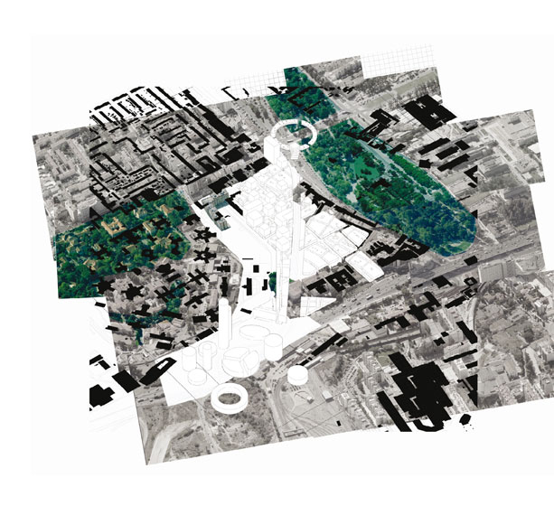
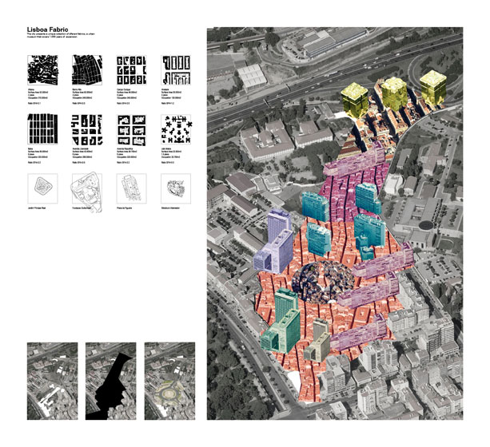
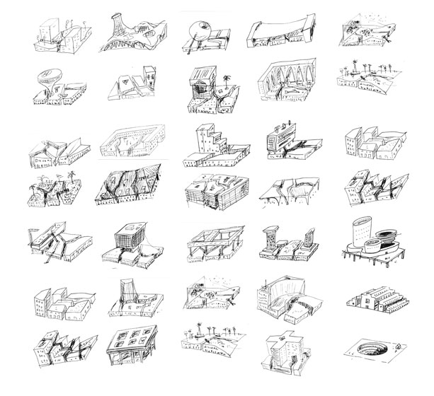

Eu hei-de amar o meu bairro
FORA + Polígono
Competition 2nd Prize - Urban Plan - Lisbon - 2010

Mobility
The task of completing the central axis of the city is understood as the rest of a residual scheme, an acupuntural one. Its buried formalization materializes this subordinate condition.
Identity
Inspired in the city of Lisboa and its most expressive urban morphologies, already experienced and based on a strong identity of the city, we mimic each other within each block: Alfama, Bairro Alto, Baixa, etc.. Repeating the syntax and parameters, the environments of each of these areas is recreated but for concrete blocks, focusing on traditional models of the city of Lisbon as the suitable models for the strong image reaffirmation (urban and experience) contemporary Lisboa deserves.
Layering
The first layer is underground: the great road that connects the central axis of the city and the various parking areas of the buildings. At the street level, a intimate network of small pedestrian's streets through the blocks. Over this immense artificial meadow, a new grid of tertiary program is overlaid.
 
Team: João Prates Ruivo, André Albuquerque with Raquel Maria Oliveira, Vicky Katsarou, Andreas Oikonomopoulos. Client: Europan Association.